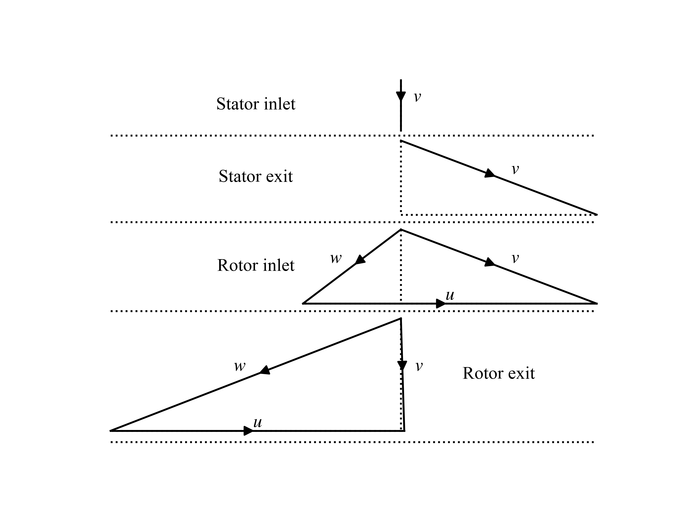
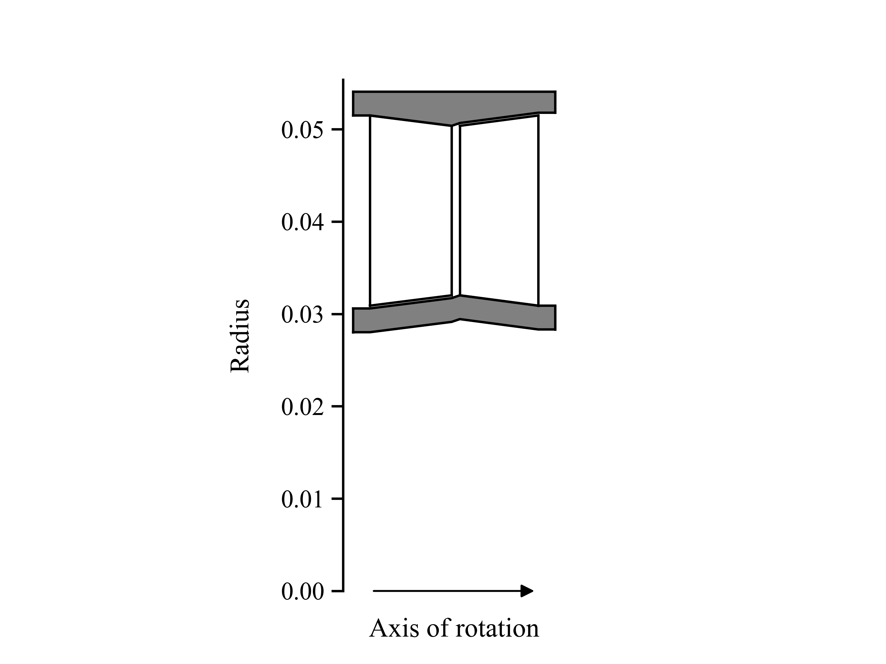

Design optimization
This section guides you through the process of optimizing the design of turbomachinery using TurboFlow. You will learn how to define optimization objectives, set constraints, and utilize the optimization algorithm to achieve the best design. Design optimization is excecuted in two steps:
Load configuration file.
Compute optimal turbomachinery.
Illustrated by a code example:
import os
import turboflow as tf
CONFIG_FILE = os.path.abspath("my_configuration.yaml") # Get absolute path of configuration file
config = tf.load_config(CONFIG_FILE) # Load configuration file
solver = tf.compute_optimal_turbine(config, export_results=True) # Compute optimal turbine
This page describes the main functionalities and options available when designing turbomachinery using turboflow:
Configuration setup
The configuration must be setup in a yaml file, where certain sections are required, while others are optional, meaning that a default value is provided. In the example below, the full configuration for design optimization is provided, where the required parts are marked with # required and the optional parts are marked with # optional.
In summary, these section are required:
turbomachinery : specifies the turbomachinery configuration.
operation_points: specifies the design point. If a list is provided, the first point is used.
The remaining input is optional. Here is an example of how the configuration file could look for a one-stage axial turbine:
turbomachinery: axial_turbine # Required
operation_points: # Required
fluid_name: air # Required
T0_in: 295.6 # Required
p0_in: 13.8e4 # Required
p_out : 13.8e4/2.298 # Required
omega: 1627 # Required
alpha_in: 0 # Required
simulation_options: # Optional
deviation_model : aungier # Optional
choking_model : evaluate_cascade_critical # Optional
rel_step_fd: 1e-4 # Optional
loss_model: # Optional
model: benner # Optional
loss_coefficient: stagnation_pressure # Optional
inlet_displacement_thickness_height_ratio: 0.011 # Optional
tuning_factors: # Optional
profile: 1.00 # Optional
incidence: 1.00 # Optional
secondary: 1.00 # Optional
trailing: 1.00 # Optional
clearance: 1.00 # Optional
design_optimization: # Optional
objective_function: # Optional
variable : overall.efficiency_ts # Optional
scale : 10 # Optional
type : maximize # Optional
variables : # Optional
specific_speed : # Optional
value : 1.2
lower_bound : 0.01
upper_bound : 10
blade_jet_ratio : # Optional
value : 0.5
lower_bound : 0.1
upper_bound : 0.9
hub_tip_ratio_in : # Optional
value : [0.6, 0.6]
lower_bound : [0.6, 0.6]
upper_bound : [0.9, 0.9]
hub_tip_ratio_out : # Optional
value : [0.6, 0.6]
lower_bound : [0.6, 0.6]
upper_bound : [0.9, 0.9]
aspect_ratio : # Optional
value : [1.5, 1.5]
lower_bound : [1.0, 1.0]
upper_bound : [2.0, 2.0]
pitch_chord_ratio : # Optional
value : [0.9, 0.9]
lower_bound : [0.75, 0.75]
upper_bound : [1.10, 1.10]
trailing_edge_thickness_opening_ratio : # Optional
value : [0.1, 0.1]
lower_bound : [0.05, 0.05]
upper_bound : [0.4, 0.4]
leading_edge_angle : # Optional
value : [0.41, 0.5]
lower_bound : [0.41, 0.08]
upper_bound : [0.92, 0.58]
gauging_angle : # Optional
value : [0.17, 0.94]
lower_bound : [0.06, 0.72]
upper_bound : [0.28, 0.94]
v_in : # Optional
value : 0.1
lower_bound : 0.001
upper_bound : 0.5
w_out : # Optional
value : [0.65, 0.65]
lower_bound : [0.1, 0.1]
upper_bound : [1.0, 1.0]
s_out : # Optional
value : [0.15, 0.15]
lower_bound : [0.0, 0.0]
upper_bound : [0.32, 0.32]
beta_out : # Optional
value : [0.83, 0.17]
lower_bound : [0.72, 0.06]
upper_bound : [0.94, 0.28]
v*_in : # Optional
value : [0.4, 0.4]
lower_bound : [0.1, 0.1]
upper_bound : [1.0, 1.0]
beta*_throat : # Optional
value : [0.83, 0.17]
lower_bound : [0.72, 0.06]
upper_bound : [0.94, 0.28]
w*_throat : # Optional
value : [0.65, 0.65]
lower_bound : [0.1, 0.1]
upper_bound : [1.0, 1.0]
s*_throat : # Optional
value : [0.15, 0.15]
lower_bound : [0.0, 0.0]
upper_bound : [0.32, 0.32]
throat_location_fraction : # Optional
value : [1.0, 1.0]
leading_edge_diameter :
value : [2*0.127e-2, 2*0.081e-2]
leading_edge_wedge_angle : # Optional
value : [50.0, 50.0]
tip_clearance : # Optional
value : [0.00, 0.030e-2]
cascade_type : # Optional
value : ["stator", "rotor"]
constraints : # Optional
- variable : overall.mass_flow_rate # Optional
type : "="
value : 2.5
normalize : True
- variable : additional_constraints.interstage_flaring # Optional
type : "="
value : 1
normalize : True
radius_type : "constant_mean" # Optional
solver_options: # Optional
library: pygmo # Optional
method: ipopt # Optional
tolerance: 1e-3 # Optional
max_iterations: 100 # Optional
derivative_method: 2-point # Optional
derivative_abs_step: 1e-6 # Optional
print_convergence: True # Optional
plot_convergence: True # Optional
update_on: "gradient" # Optional
The design_optimization section contains information on the objective function, constraints and design variables:
objective_function: defined by specifying variable, type and scale.
constraints: each constraint is defined by specifying the variable name, type, value and if the constraint should be normalized or not.
variables: set of variables required for design optimization. The variable is considered a design variable if bounds are provided. All variables have a default value, and some have defualt bounds. Note that velocities (v and w), entropies (s) and flow angles (beta) must be design variables.
See Configuration Options for more information regarding the available inputs.
To load the configuration file, the absolute path must be provided to turboflow.load_config:
import os
import turboflow as tf
CONFIG_FILE = os.path.abspath("my_configuration.yaml") # Get absolute path of the configuration file
config = tf.load_config(CONFIG_FILE) # Load configuration file
Note
The only current available option for turbomachinery is axial_turbine.
Note
Velocities (v and w), entropies (s) and flow angles (beta) in the variables section must be provided with bounds (as design variables).
Compute optimal turbine
To compute the optimal turbine, simply provide the configuration file to the function compute_optimal_turbine:
import os
import turboflow as tf
CONFIG_FILE = os.path.abspath("my_configuration.yaml") # Get absolute path of the configuration file
config = tf.load_config(CONFIG_FILE) # Load configuration file
solver = tf.compute_optimal_turbine(
out_filename=None,
out_dir="output",
export_results=True,
):
If export_results is set to True, the simulation data is exported as an Excel file. The file is saved either to a specified directory (out_dir) or to the default directory “output”. The default filename (out_filename) is design_optimization_{current_time}, where current_time is a string formatted as {year}{month}{day}{hour}{minute}_{second}.
Plotting results
Plotting functions are provided to graphically illustrate the simulated data:
Plot velocity triangles: turboflow.plot_velocity_triangles
Plot axial-radial plane: turboflow.plot_axial_radial_plane
Plot velocity triangles
This function plots the velocity triangles at each plane of the turbomahcinery. The plot is initialized by providing the plane specific data from the solution of optimization problem:
import os
import turboflow as tf
CONFIG_FILE = os.path.abspath("my_configuration.yaml") # Get absolute path of the configuration file
config = tf.load_config(CONFIG_FILE) # Load configuration file
solver = tf.compute_optimal_turbine(
out_filename=None,
out_dir="output",
export_results=True,
):
fig, ax = tf.plot_functions.plot_velocity_triangles(solvers.problem.results["plane"])
Here is an example of how the velocity triangle plots looks:
{kind=link}
Plot axial-radial plane
This function plots the geometry of an axial-turbine in the axial-radial plane. The plot is initialized by providing the geometry from the solution of the optimization problem:
import os
import turboflow as tf
CONFIG_FILE = os.path.abspath("my_configuration.yaml") # Get absolute path of the configuration file
config = tf.load_config(CONFIG_FILE) # Load configuration file
solver = tf.compute_optimal_turbine(
out_filename=None,
out_dir="output",
export_results=True,
):
fig, ax = tf.plot_functions.plot_axial_radial_plane(solvers.problem.geometry)
Here is an example of how the plot look:
{kind=link}